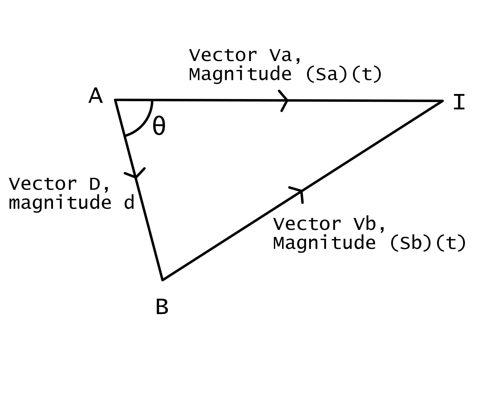

|
Let the target be at point A, with velocity Va Let the chaser be at point B, with velocity Vb Let D be vector from point A to point B, with magnitude d Let θ be angle BAI Let the point of interception be at point I, and time taken to intercept be t
|
 |
|||||||||||||
|
Using cosine rule, |Vb|² = |D|² + |Va|² - 2|D||Va|cosθ ((Sb)(t))² = d² + ((Sa)(t))² - 2|D||Va|cosθ (Sb - Sa)t² + 2(d)(Sa)(t)(cosθ)t - d² = 0 Using the definition of dot product, D ⋅ Va = |D||Va|cosθ = (d)(Sa)(t)(cosθ) Hence, (Sb - Sa)t² + 2(D ⋅ Va)t - d² = 0, giving us a quadratic formula with unknown term t Solving with the quadratic formula can give us t, time taken to intercept. With this, intercept position can be found using the position of the target and its speed and normalised velocity (to give direction). I = A + (Sa)(t)(normalised(Va)) As promised, all solveable with concepts taught in H2 Mathematics :) |
||||||||||||||